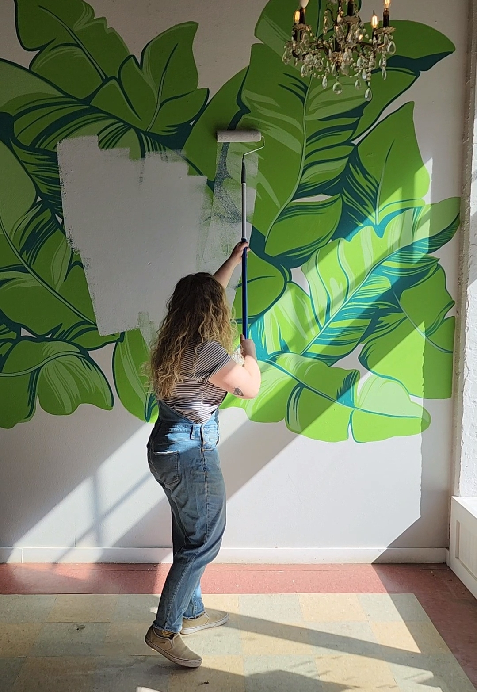
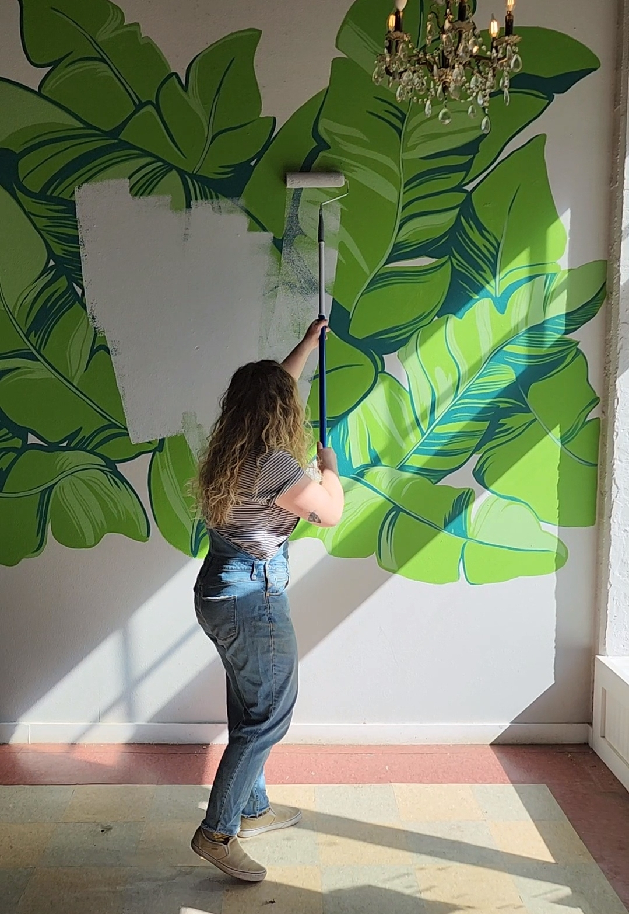
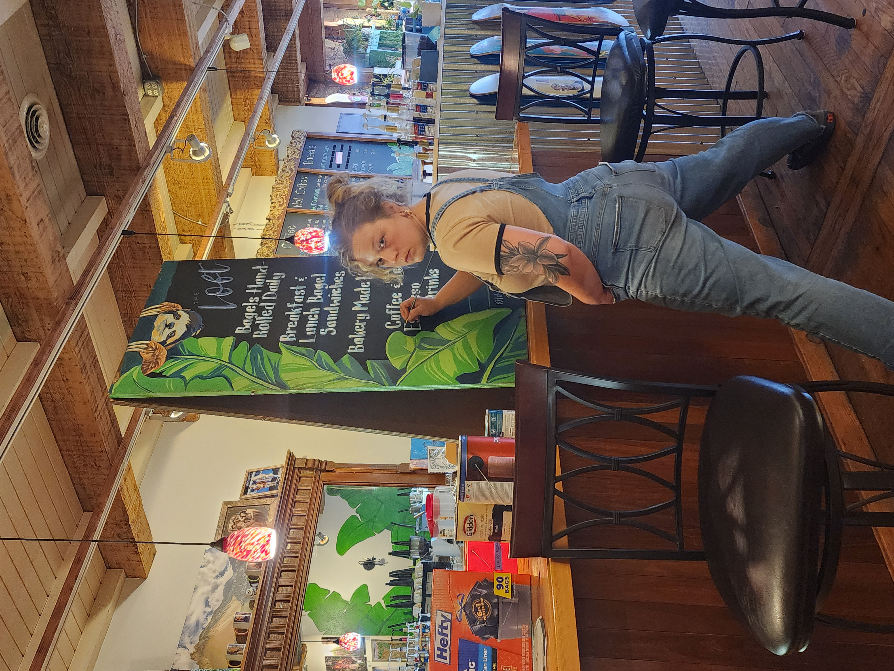
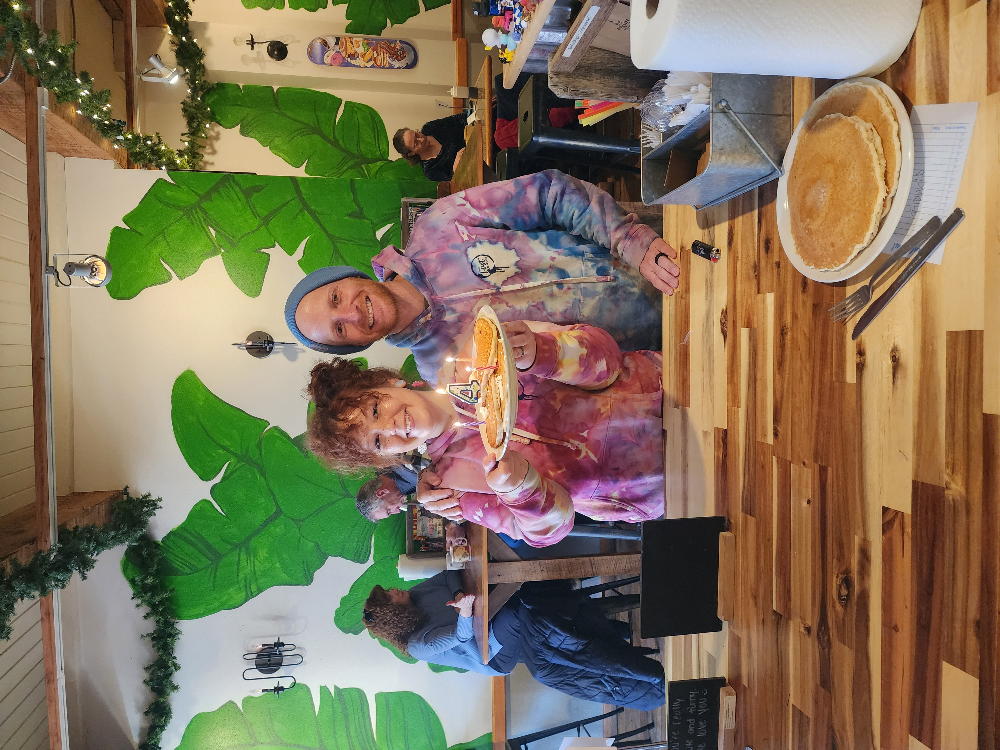
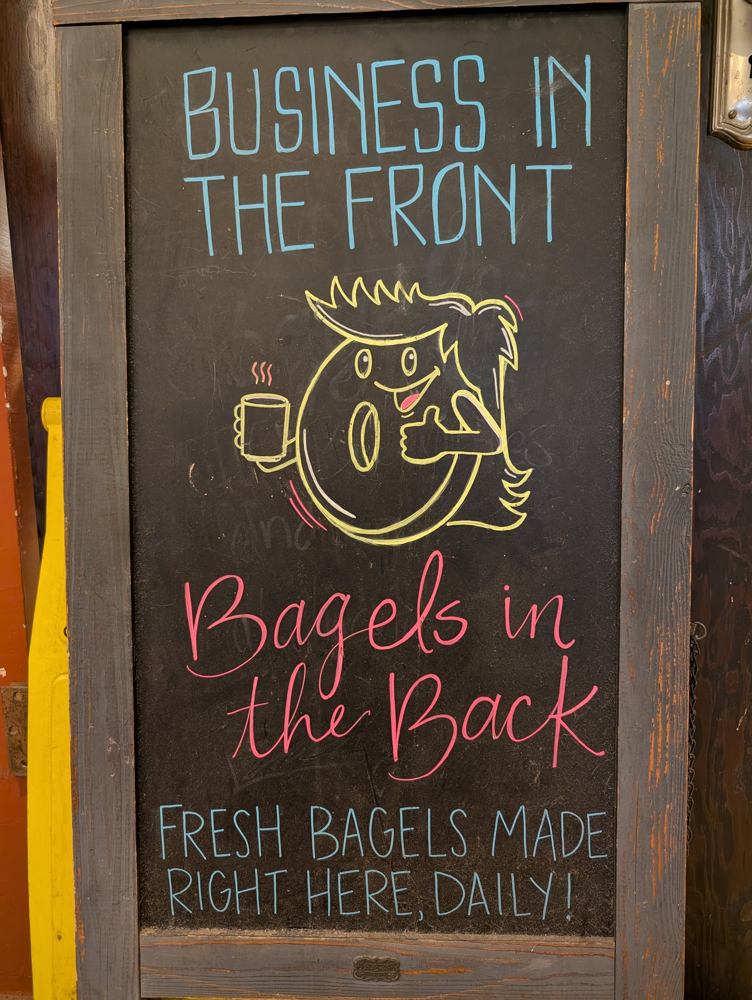
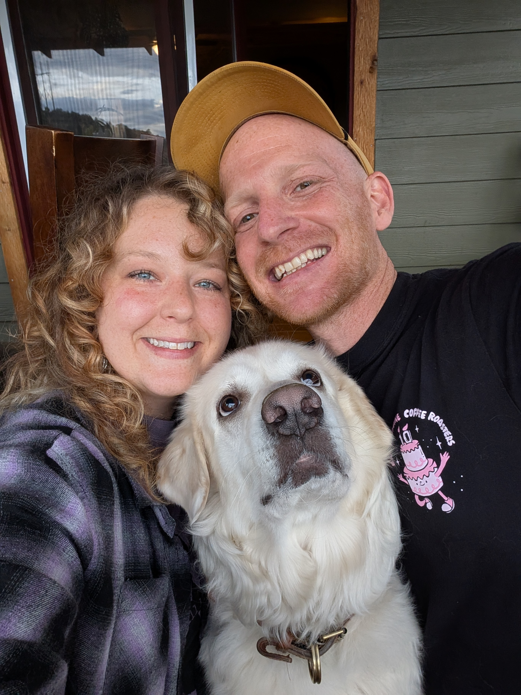
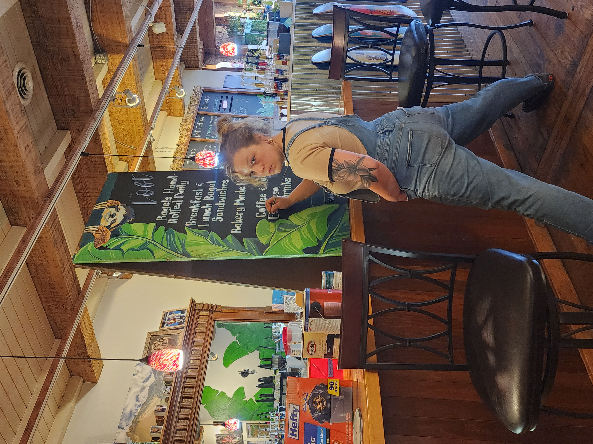
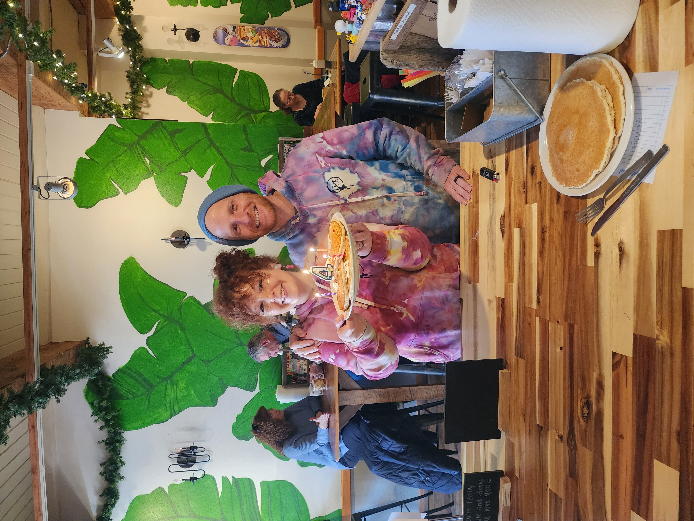
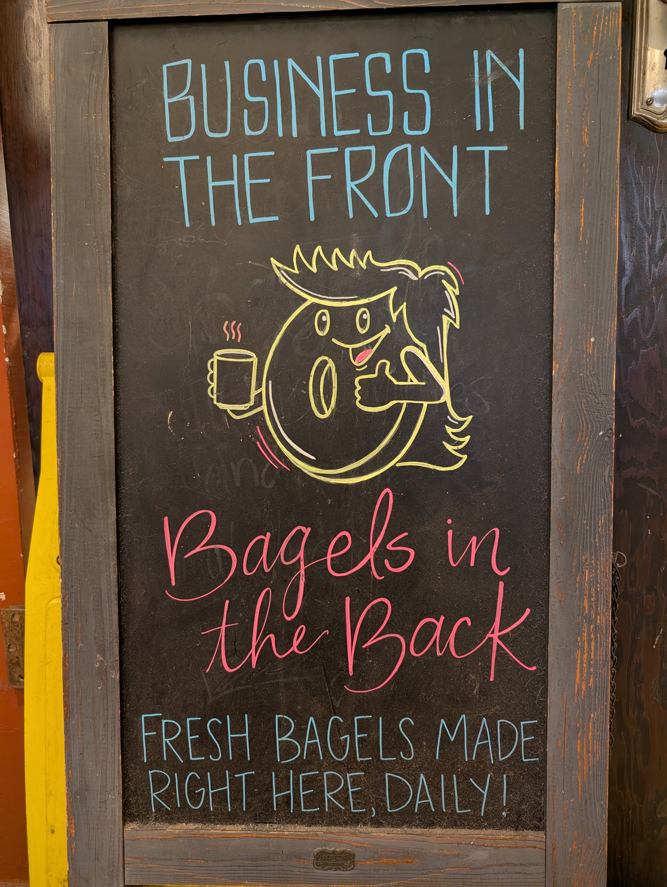
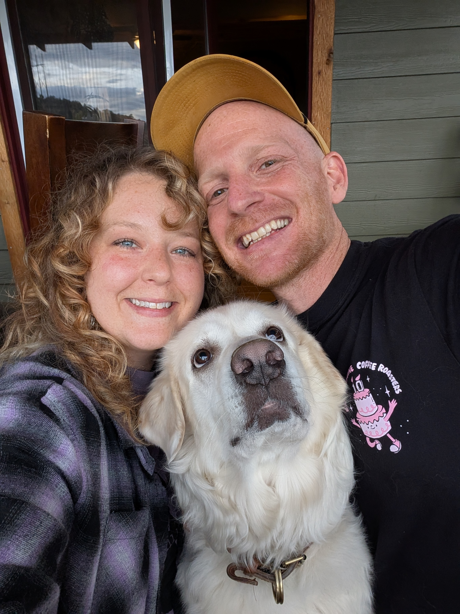

Founded in 2021 out of a love for community and a spirit of adventure, The Loft is more than just a coffee shop—it’s a gathering place. From our scratch kitchen to our carefully crafted bagels, we prioritize quality and care in everything we do, front and back of house.
Our philosophy centers on connection: we support local bands, collaborate with small businesses, and partner with local suppliers like Cos-bucha to bring you fresh, local flavors. Be sure to try our signature bagel, Lucy in the Sky, an open-faced masterpiece bursting with color, texture, and flavor.
As a proud recipient of the 2025 Manitou Springs Manni Award, we strive to be a hub for our neighborhood—hosting fundraisers, supporting the local food pantry, and creating a space where community thrives.

 

 






